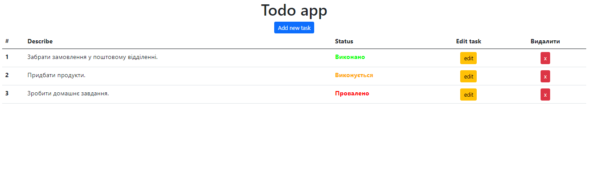
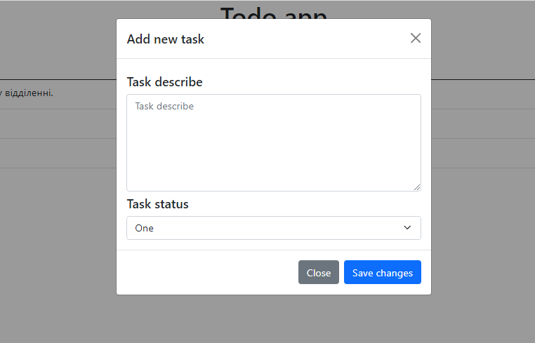
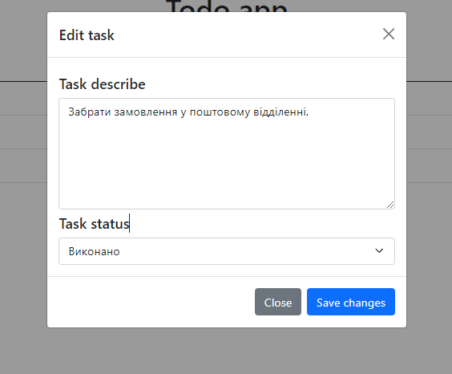
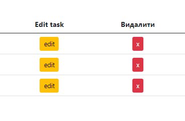

Тема 26. Модуль №4
1. Створіть todo app. Викоритовуйте готову верстку: index.html, style.css.

2. Створіть масив із завданнями. Кожне завдання має поле з описом та статусом. Статус приймає 3 значення: виконується, виконано і провалено. Зберігайте список завдань у localStorage.
3. Кнопка додати завдання має відображати модальне вікно №1 в якому можна додати нове завдання. Для відображення модального вікна додате йому класс "show"

4. Кнопка редагувати завдання має відображати модальне вікно №2 в якому можна змінити опис і статус завдання.

5. Кнопка видалити має видаляти завдання зі списку.

Додатково
6. Додавайте нові поля у опис завдання: дату, ім'я автора завдання, локацію завдання.